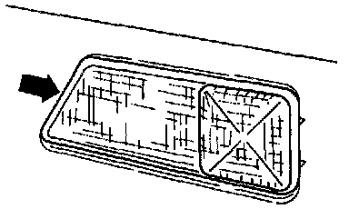

Marker Lamp: Service and Repair
For front Marker Lights and Turn Signals, Service and RepairRemoving:

- Using small screwdriver, carefully pry side marker light from bumper cover until retaining lug (arrow) is released.
- Disconnect connector and remove side marker light.
Installing:
- Attach connector to side marker light.
- Push side marker light into bumper cover until retaining lug engages.